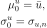
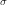
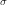

TruncatedNormalFactory¶
(Source code, png, hires.png, pdf)
{kind=link}
{kind=link}
- class TruncatedNormalFactory(*args)¶
Truncated Normal factory.
- Available constructor:
TruncatedNormalFactory()
See also
Notes
Several estimators to build a TruncatedNormal distribution from a scalar sample are available.
Maximum likelihood estimator:
The parameters are estimated by numerical maximum likelihood estimation with scaling. The starting point of the optimization algorithm is based on the moment based estimator.
Let
 be the sample sample size.
Let be the sample minimum and be the sample maximum.
be the sample sample size.
Let be the sample minimum and be the sample maximum.We compute the scaling parameters
 and
and  from the equations:
from the equations:Then the sample is scaled into from the equation:
for
 .
Hence, the scaled sample is so that
for .
.
Hence, the scaled sample is so that
for .The starting point of the likelihood maximization algorithm is based on the scaled sample. Let

where is the sample mean of the scaled sample and
 is the sample standard deviation of the scaled sample.
is the sample standard deviation of the scaled sample.Then the likelihood maximization optimization algorithm is used to fit the scaled truncated normal distribution. The TruncatedNormalFactory-SigmaLowerBound key in the
ResourceMapis used as a lower bound for the scaled standard deviation.Let
 be computed from the sample size:
be computed from the sample size:The lower and upper bounds of the scaled truncated normal distribution are set to and
and are not optimized.
This leads to a maximum likelihood optimization problem in 2 dimensions only, where the
solution is the optimum scaled mean and the
optimum scaled standard deviation .Finally, the parameters of the truncated normal distribution are computed from the parameters of the scaled truncated normal distribution. The inverse scaling equation is , which leads to:
Moment based estimator:
Let be the sample minimum and be the sample maximum. Let be the sample range.
The distribution bounds are computed from the equations:
Then the
 and  parameters are estimated from the
methods of moments.
and  parameters are estimated from the
methods of moments.Examples
In the following example, the parameters of a
TruncatedNormalare estimated from a sample.>>> import openturns as ot >>> ot.RandomGenerator.SetSeed(0) >>> size = 10000 >>> distribution = ot.TruncatedNormal(2.0, 3.0, -1.0, 4.0) >>> sample = distribution.getSample(size) >>> factory = ot.TruncatedNormalFactory() >>> estimated = factory.build(sample) >>> estimated = factory.buildMethodOfMoments(sample) >>> estimated = factory.buildMethodOfLikelihoodMaximization(sample)
Methods
build(*args)Estimate the distribution using the default strategy.
buildAsTruncatedNormal(*args)Estimate the distribution as native distribution.
buildEstimator(*args)Build the distribution and the parameter distribution.
Method of likelihood maximization.
buildMethodOfMoments(sample)Method of moments estimator.
Accessor to the bootstrap size.
Accessor to the object's name.
getId()Accessor to the object's id.
getName()Accessor to the object's name.
Accessor to the object's shadowed id.
Accessor to the object's visibility state.
hasName()Test if the object is named.
Test if the object has a distinguishable name.
setBootstrapSize(bootstrapSize)Accessor to the bootstrap size.
setName(name)Accessor to the object's name.
setShadowedId(id)Accessor to the object's shadowed id.
setVisibility(visible)Accessor to the object's visibility state.
- __init__(*args)¶
- build(*args)¶
Estimate the distribution using the default strategy.
- Parameters
- sample
Sample Data
- sample
- Returns
- distribution
Distribution The estimated distribution
- distribution
Notes
The default strategy is using the maximum likelihood estimators with scaling.
- buildAsTruncatedNormal(*args)¶
Estimate the distribution as native distribution.
- Parameters
- sample
Sample Data
- sample
- Returns
- distribution
TruncatedNormal The estimated distribution
- distribution
- buildEstimator(*args)¶
Build the distribution and the parameter distribution.
- Parameters
- sample2-d sequence of float
Sample from which the distribution parameters are estimated.
- parameters
DistributionParameters Optional, the parametrization.
- Returns
- resDist
DistributionFactoryResult The results.
- resDist
Notes
According to the way the native parameters of the distribution are estimated, the parameters distribution differs:
Moments method: the asymptotic parameters distribution is normal and estimated by Bootstrap on the initial data;
Maximum likelihood method with a regular model: the asymptotic parameters distribution is normal and its covariance matrix is the inverse Fisher information matrix;
Other methods: the asymptotic parameters distribution is estimated by Bootstrap on the initial data and kernel fitting (see
KernelSmoothing).
If another set of parameters is specified, the native parameters distribution is first estimated and the new distribution is determined from it:
if the native parameters distribution is normal and the transformation regular at the estimated parameters values: the asymptotic parameters distribution is normal and its covariance matrix determined from the inverse Fisher information matrix of the native parameters and the transformation;
in the other cases, the asymptotic parameters distribution is estimated by Bootstrap on the initial data and kernel fitting.
- buildMethodOfLikelihoodMaximization(sample)¶
Method of likelihood maximization.
- Parameters
- sample
Sample Data
- sample
- Returns
- distribution
TruncatedNormal The estimated distribution
- distribution
- buildMethodOfMoments(sample)¶
Method of moments estimator.
- Parameters
- sample
Sample Data
- sample
- Returns
- distribution
TruncatedNormal The estimated distribution
- distribution
- getBootstrapSize()¶
Accessor to the bootstrap size.
- Returns
- sizeinteger
Size of the bootstrap.
- getClassName()¶
Accessor to the object’s name.
- Returns
- class_namestr
The object class name (object.__class__.__name__).
- getId()¶
Accessor to the object’s id.
- Returns
- idint
Internal unique identifier.
- getName()¶
Accessor to the object’s name.
- Returns
- namestr
The name of the object.
- getShadowedId()¶
Accessor to the object’s shadowed id.
- Returns
- idint
Internal unique identifier.
- getVisibility()¶
Accessor to the object’s visibility state.
- Returns
- visiblebool
Visibility flag.
- hasName()¶
Test if the object is named.
- Returns
- hasNamebool
True if the name is not empty.
- hasVisibleName()¶
Test if the object has a distinguishable name.
- Returns
- hasVisibleNamebool
True if the name is not empty and not the default one.
- setBootstrapSize(bootstrapSize)¶
Accessor to the bootstrap size.
- Parameters
- sizeinteger
Size of the bootstrap.
- setName(name)¶
Accessor to the object’s name.
- Parameters
- namestr
The name of the object.
- setShadowedId(id)¶
Accessor to the object’s shadowed id.
- Parameters
- idint
Internal unique identifier.
- setVisibility(visible)¶
Accessor to the object’s visibility state.
- Parameters
- visiblebool
Visibility flag.